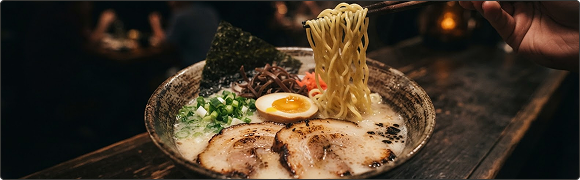
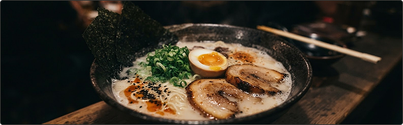
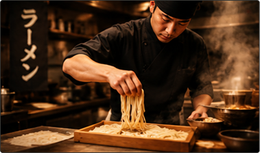
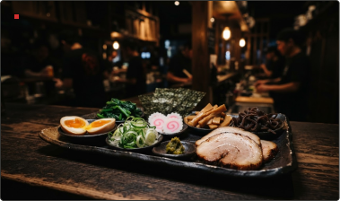

Authentic Flavor in Every Slurp
Slow-simmered tonkotsu. Springy noodles. Bold, honest flavor. Your favorite Japanese comfort, served one satisfying bowl at a time.
Real ramen. From ₱190 a bowl.

NOTHING EXTRA. JUST THE GOOD STUFF.
Simple ingredients. Patient preparation. Discover what makes our signature bowl yours.

SHIRO, SIMPLY PERFECT.
Rich, creamy tonkotsu. A clean finish. The signature taste at the heart of Just Ramen.
+ Hover over the card to discover the ingredients.

SHIRO, SIMPLY PERFECT.
Rich, creamy tonkotsu. A clean finish. The signature taste at the heart of Just Ramen.
WHAT GOES INTO YOUR BOWL
- 01 Slow-simmered pork broth
- 02 Fresh wheat noodles
- 03 Tender chashu pork
- 04 Ajitsuke tamago
- 05 Spring onions
- 06 Roasted nori
THIS IS WHAT JUST MEANS.
Japanese Ultimate Signature Taste. More than a name — the way we make every bowl.

JAPANESE RAMEN CRAFTAuthenticity
Rooted in Japanese ramen traditions, from our patient broth-making to that first perfect slurp.

FRESH INGREDIENTS & PREPARATIONQuality
Carefully chosen ingredients, freshly prepared toppings, and no shortcuts on the things that matter.
 OUR SIGNATURE BOWL
OUR SIGNATURE BOWL
Signature Taste
Creamy tonkotsu, bold black garlic, or a fiery kick. Familiar comfort, with a flavor that is unmistakably JUST.